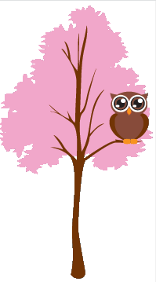

1
2
3
4
- object-fit : 컨테이너에 맞게 img또는 video크기를 조정할 때 사용 - fill : 기본값 요소의 콘텐츠 상자를 채우도록 크기가 조정된다. - contain : 요소의 컨텐츠 상자에 맞으면서 종횡비를 유지하도록 크기가 조정된다. - cover : 개체가 크기에 맞게 잘린다. - scale-down : 컨텐츠가 없음 또는 포함이 지정된 것처럼 크기가 조정된다.- object-position : object-fit과 함께 사용되며 내부에 x/y좌표로 배치되는 방법을 지정 - opacity : 요소의 불투명도 수준을 설정  - order : flex와 함께 쓰이며 순서를 정할 때 사용 동일한 컨테이너내의 나머지 항목들에 순서를 정한다.
- outline : 요소를 좀 더 눈에 띄게 만들기 위해 바깥쪽의 요소 주위에 그려지는 선이다. - outline-color : 색상 - outline-offset : 엘리먼트와 아웃라인이 떨어지는 간격 설정 - outline-style : 테두리 스타일 설정 - outline-width : 아웃라인의 너비를 설정 - overflow : 요소에서 넘치는 부분에 대한 표현 - visible : 기본 값 넘치는 부분이 스크롤이 생성되더라도 보이게 해준다. - hidden : 넘치는 부분을 숨긴다. - clip : 스크롤을 금지하고 넘치는 부분을 자른다. - scroll : 넘치는 부분이 스크롤바로 이동하여 확이할 수 있다. - auto : x, y를 포함하여 넘치는 부분 스크롤과 함께 생성 1234